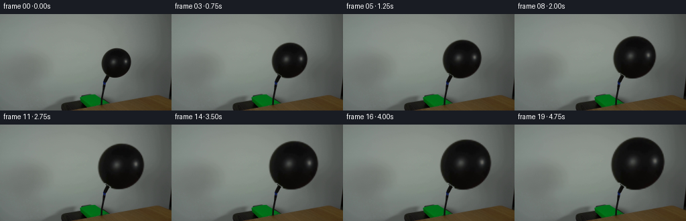
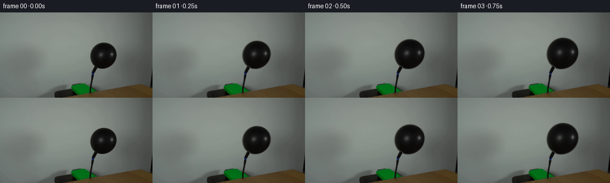
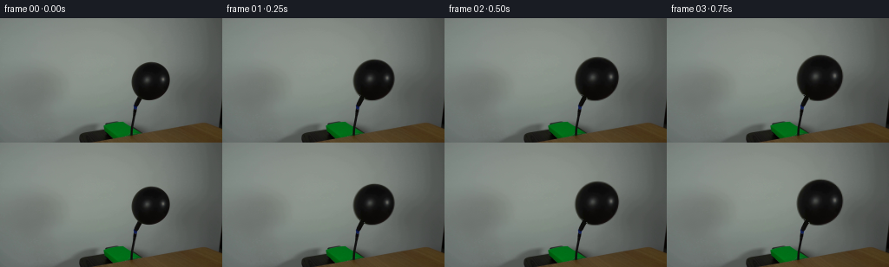
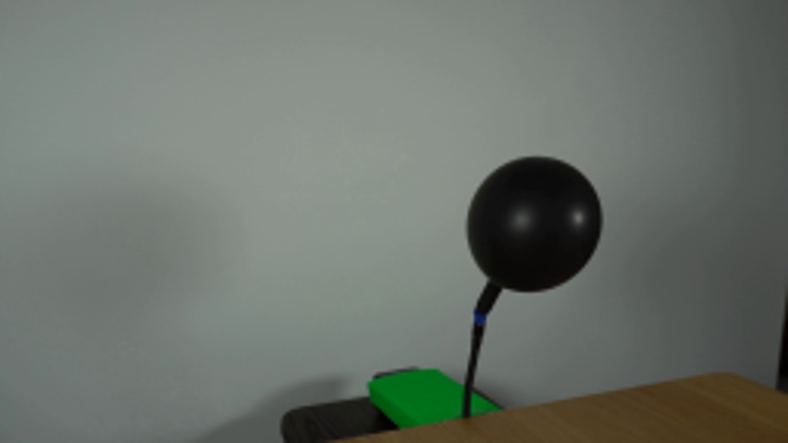
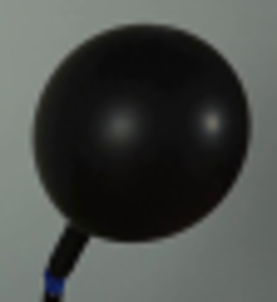
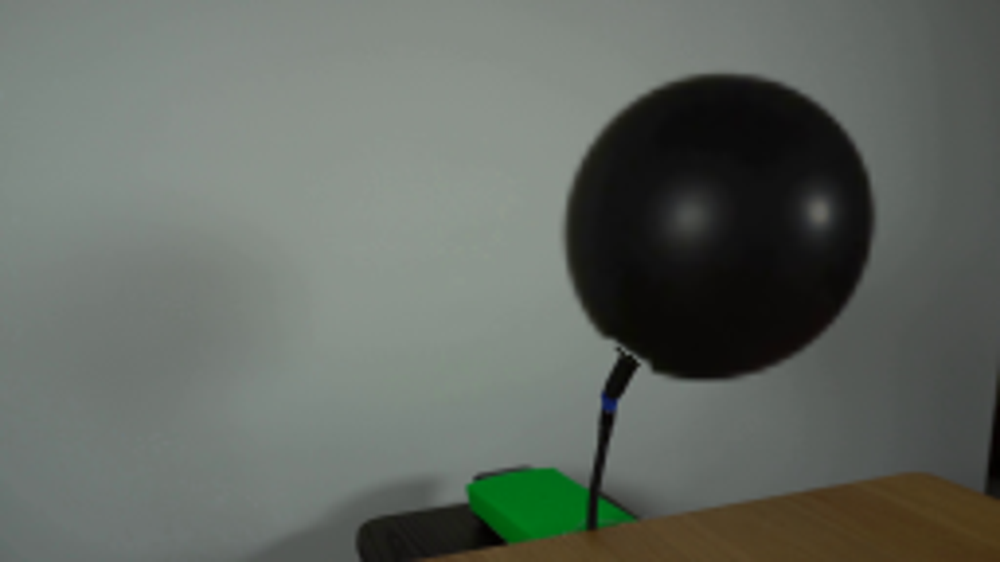
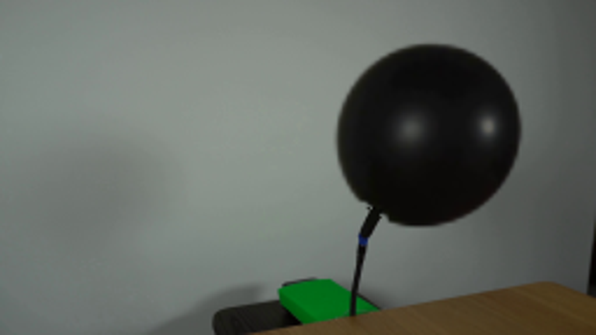

CODING AGENTS AS PIXEL WORLD MODELS
traex/GPT-6.1-Sol · 0037
点击播放 · 原生 RGB 像素
逐轮保存的候选
回放视频、检查图与代码变化。
每份候选均可单独播放。实际图片检查记录在下方工具轨迹中。
候选 01播放与检查图
点击播放 · 原生 RGB 像素


展开代码变化
--- 上一保存版本
+++ 本次保存版本
@@ -0,0 +1,86 @@
+from pathlib import Path
+import numpy as np
+from PIL import Image
+import cv2
+from scipy.ndimage import gaussian_filter
+import artifact_io
+
+ROOT = Path(__file__).resolve().parent
+
+def main():
+ source = np.asarray(Image.open(ROOT / 'first_frame.png').convert('RGB'))
+ image = source.astype(np.float64)
+ yy, xx = np.mgrid[:144, :256]
+ # Extract the original rubber surface, including its photographed highlights.
+ lumen = image.mean(axis=2)
+ region = (xx >= 149) & (xx <= 199) & (yy >= 48) & (yy <= 96)
+ silhouette = ((lumen < 70) & region).astype(np.uint8)
+ contours, _ = cv2.findContours(silhouette, cv2.RETR_EXTERNAL, cv2.CHAIN_APPROX_NONE)
+ points = max(contours, key=cv2.contourArea).reshape(-1, 2)
+ points = points[~((points[:, 0] < 165) & (points[:, 1] > 87))]
+ (cx, cy), (dx, dy), angle = cv2.fitEllipse(points[:, None, :].astype(np.float32))
+ angle = np.deg2rad(angle)
+ u = (xx-cx)*np.cos(angle)+(yy-cy)*np.sin(angle)
+ v = -(xx-cx)*np.sin(angle)+(yy-cy)*np.cos(angle)
+ radius = np.sqrt((u/(dx/2))**2+(v/(dy/2))**2)
+
+ # Only the small wall patch hidden by the starting balloon needs recovery.
+ select = (xx>138)&(xx<211)&(yy>29)&(yy<111)&(radius>1.16)&~((xx<166)&(yy>86))
+ X, Y = (xx-174)/50, (yy-72)/50
+ basis = np.stack([np.ones_like(X), X, Y, X*X, X*Y, Y*Y,
+ X**3, X*X*Y, X*Y*Y, Y**3], axis=-1)
+ wall = basis @ np.linalg.lstsq(basis[select], image[select], rcond=None)[0]
+ wall = np.clip(wall,0,255)
+ mx = cx+(xx-cx)*np.minimum(1, .87/np.maximum(radius,1e-6))
+ my = cy+(yy-cy)*np.minimum(1, .87/np.maximum(radius,1e-6))
+ rim = cv2.remap(image.astype(np.float32), mx.astype(np.float32), my.astype(np.float32), cv2.INTER_CUBIC)
+ alpha = np.clip((wall-image).mean(2)/np.maximum((wall-rim).mean(2),1),0,1)
+ alpha[radius<.89] = 1
+ alpha *= np.clip((1.09-radius)/.04,0,1)
+ # The connector is a stationary part of the setup, not inflated rubber.
+ connector = (xx<164)&(yy>88)
+ alpha[connector] = np.clip((1.016-radius[connector])*20,0,1)
+ alpha[radius>1.1] = 0
+ surface = np.divide(image-wall*(1-alpha[...,None]), alpha[...,None],
+ out=np.zeros_like(image), where=alpha[...,None]>.001)
+ surface = np.clip(surface,0,100)
+ premult = (surface*alpha[...,None]).astype(np.float32)
+ alpha = alpha.astype(np.float32)
+ # Remove the body underneath; retain the slender hose and blue collar.
+ remove = np.clip((1.12-radius)/.05,0,1)
+ remove[connector & (radius>1.0)] = 0
+ background = image*(1-remove[...,None])+wall*remove[...,None]
+
+ frames = [source.copy()]
+ anchor = np.array([160.1,91.4])
+ # A constant air flow increases the volume, rather than the radius, linearly.
+ for frame in range(1,20):
+ t = frame/19
+ size = (1+4.65*t)**(1/3)
+ # As tension rises the small pear shape becomes slightly more spherical.
+ sx = size*(1+0.011*t)
+ sy = size
+ # Tiny elastic oscillation, with the nozzle staying fixed.
+ sway = np.deg2rad(.45*np.sin(frame*.48)*np.sin(np.pi*t))
+ c,s = np.cos(sway), np.sin(sway)
+ qx,qy = xx-anchor[0], yy-anchor[1]
+ mapx = (anchor[0]+(c*qx+s*qy)/sx).astype(np.float32)
+ mapy = (anchor[1]+(-s*qx+c*qy)/sy).astype(np.float32)
+ a = cv2.remap(alpha, mapx, mapy, cv2.INTER_LINEAR, borderMode=cv2.BORDER_CONSTANT)
+ color = cv2.remap(premult, mapx, mapy, cv2.INTER_CUBIC, borderMode=cv2.BORDER_CONSTANT)
+ color = np.divide(color, np.maximum(a[...,None],.0001))
+ # Preserve a small, fixed photographic softness at the growing outline.
+ p = np.clip(a,1e-5,1-1e-5)
+ softened = 1/(1+np.exp(-np.log(p/(1-p))*size**.65))
+ softened[a<.0001]=0
+ softened[a>.9999]=1
+ color = np.clip(color,0,100)
+ out = background*(1-softened[...,None])+color*softened[...,None]
+ # Seamless original nozzle region and untouched, locked-off room.
+ out = np.clip(np.rint(out),0,255).astype(np.uint8)
+ frames.append(out)
+ frames=np.stack(frames)
+ artifact_io.save(frames,ROOT)
+
+if __name__=='__main__':
+ main()
候选 02播放与检查图
点击播放 · 原生 RGB 像素

展开代码变化
--- 上一保存版本
+++ 本次保存版本
@@ -50,6 +50,18 @@
remove = np.clip((1.12-radius)/.05,0,1)
remove[connector & (radius>1.0)] = 0
background = image*(1-remove[...,None])+wall*remove[...,None]
+ # Carry the narrow rubber neck just inside the inflated body. Its lower
+ # end and the supply hose remain fixed; the expanding body occludes it.
+ start = np.array([158.9, 94.4])
+ end = np.array([162.4, 88.2])
+ direction = end-start
+ along = np.clip(((xx-start[0])*direction[0]+(yy-start[1])*direction[1])/
+ np.dot(direction,direction),0,1)
+ distance = np.hypot(xx-start[0]-along*direction[0],
+ yy-start[1]-along*direction[1])
+ neck_alpha = np.clip((2.55-distance)/.85,0,1)
+ neck_rgb = np.array([12.5,13.,9.])
+ background = background*(1-neck_alpha[...,None])+neck_rgb*neck_alpha[...,None]
frames = [source.copy()]
anchor = np.array([160.1,91.4])
可观测工具轨迹
实际执行的命令与返回图片。
命令 1exit 0
/bin/bash -lc "ls -la && cat prompt.txt && printf '\\n---RULES---\\n' && cat GENERATION_RULES.md"
命令 2exit 0
/bin/bash -lc "cat artifact_io.py && python - <<'PY'
from PIL import Image
im=Image.open('first_frame.png'); print(im.size); im.resize((1024,576)).save('.tmp/first_large.png')
PY"命令 3exit 0
/bin/bash -lc "python - <<'PY'
import importlib.util
for m in ['numpy','scipy','PIL','cv2']:
print(m, bool(importlib.util.find_spec(m)))
from PIL import Image
im=Image.open('first_frame.png'); im.crop((145,46,201,107)).resize((560,610)).save('.tmp/balloon.png')
PY"命令 4exit 0
/bin/bash -lc "python - <<'PY'
from PIL import Image
import numpy as np
im=np.array(Image.open('first_frame.png'));lum=im.mean(2)
for y in [48,49,50,51,52,53,54,60,72,85,90,93,94,95,96,97,98,99,100,101,102,103,104,105]:
print(y,[(x, tuple(im[y,x])) for x in range(149,198) if lum[y,x]<85])
PY"命令 5exit 0
/bin/bash -lc "python - <<'PY'
import cv2,numpy as np
from PIL import Image
im=np.array(Image.open('first_frame.png'));g=im.mean(2)
y,x=np.mgrid[:144,:256]
mask=(g<80)&(x>145)&(x<202)&(y>47)&(y<98)
co,_=cv2.findContours(mask.astype('uint8'),cv2.RETR_EXTERNAL,cv2.CHAIN_APPROX_NONE)
p=max(co,key=cv2.contourArea).reshape(-1,2)
p=p[~((p[:,0]<165)&(p[:,1]>88))]
print(cv2.fitEllipse(p[:,None,:].astype('float32')))
PY"命令 6exit 0
/bin/bash -lc "python - <<'PY'
import numpy as np,cv2
from PIL import Image
im=np.array(Image.open('first_frame.png')).astype(float); y,x=np.mgrid[:144,:256];cx,cy=173.5,73.;r=np.hypot(x-cx,y-cy)
sel=(x>134)&(x<217)&(y>24)&(y<114)&(r>27)&~((x<166)&(y>86))
X=(x-174)/50;Y=(y-72)/50
A=np.stack([np.ones_like(X),X,Y,X*X,X*Y,Y*Y],-1)
c=np.linalg.lstsq(A[sel],im[sel],rcond=None)[0]; bg=A@c
Image.fromarray(np.clip(bg,0,255).astype('uint8')).save('.tmp/background.png')
print(c)
for py,px in [(50,174),(72,151),(74,196),(95,174),(90,185)]:print(py,px,im[py,px],bg[py,px])
PY"命令 7exit 0
/bin/bash -lc "python - <<'PY'
from PIL import Image
import numpy as np
im=np.asarray(Image.open('first_frame.png'));L=im.mean(2)
for y in range(47,97):
row=[]
for x in range(148,200):
v=L[y,x]; row.append(' ' if v>115 else '.' if v>80 else '+' if v>50 else 'o' if v>25 else '#')
print('%3d'%y+''.join(row))
PY"命令 8exit 0
/bin/bash -lc "cat > .tmp/test_matte.py <<'PY'
import numpy as np, cv2
from scipy.ndimage import gaussian_filter
from PIL import Image
im=np.array(Image.open('first_frame.png')).astype(float)
y,x=np.mgrid[:144,:256]
# ellipse fitting to the body edge at half opacity
lum=im.mean(2)
roi=(x>=149)&(x<=199)&(y>=48)&(y<=96)
seg=(lum<70)&roi
c,_=cv2.findContours(seg.astype('uint8'),cv2.RETR_EXTERNAL,cv2.CHAIN_APPROX_NONE)
p=max(c,key=cv2.contourArea).reshape(-1,2)
p=p[~((p[:,0]<165)&(p[:,1]>87))]
ell=cv2.fitEllipse(p[:,None,:].astype('float32'))
print(ell)
(cx,cy),(d1,d2),ang=ell
u=(x-cx)*np.cos(np.deg2rad(ang))+(y-cy)*np.sin(np.deg2rad(ang))
v=-(x-cx)*np.sin(np.deg2rad(ang))+(y-cy)*np.cos(np.deg2rad(ang))
r=np.sqrt((u/(d1/2))**2+(v/(d2/2))**2)
# clean polynomial wall approximation, excludes body and hose
sel=(x>138)&(x<211)&(y>29)&(y<111)&(r>1.16)&~((x<166)&(y>86))
X=(x-174)/50;Y=(y-72)/50
A=np.stack([np.ones_like(X),X,Y,X*X,X*Y,Y*Y,X**3,X*X*Y,X*Y*Y,Y**3],-1)
bg=A@np.linalg.lstsq(A[sel],im[sel],rcond=None)[0]
# Estimate surface color at soft silhouette by inwards sampling.
mapx=cx+(x-cx)*np.minimum(1,.87/np.maximum(r,1e-6))
mapy=cy+(y-cy)*np.minimum(1,.87/np.maximum(r,1e-6))
fg_edge=cv2.remap(im.astype('float32'),mapx.astype('float32'),mapy.astype('float32'),cv2.INTER_CUBIC)
alpha=np.clip((bg-im).mean(2)/(bg-fg_edge).mean(2),0,1)
alpha=np.where(r<.89,1,alpha)
alpha*=np.clip((1.09-r)/.04,0,1)
# isolate round balloon from the neck with analytic matte of the elliptical lower-left side.
# free ellipse matte across the neck connection
geo=np.clip((1.016-r)*20,0,1)
neck=(x<164)&(y>88)
alpha[neck]=geo[neck]
alpha[r>1.1]=0
premult=im-bg*(1-alpha[...,None])
fg=np.divide(premult,alpha[...,None],out=np.zeros_like(im),where=alpha[...,None]>.001)
fg=np.clip(fg,0,255)
Image.fromarray((alpha*255).astype('uint8')).save('.tmp/matte.png')
Image.fromarray(np.clip(fg*alpha[...,None]+bg*(1-alpha[...,None]),0,255).astype('uint8')).save('.tmp/reconstructed.png')
np.savez('.tmp/matte.npz',bg=bg,alpha=alpha,fg=fg)
PY
python .tmp/test_matte.py"命令 9exit 0
/bin/bash -lc "python - <<'PY'
from PIL import Image
Image.open('.tmp/matte.png').crop((146,47,201,100)).resize((550,530)).save('.tmp/matte_big.png')
PY"命令 10exit 0
/bin/bash -lc "cat > generate.py <<'PY'
from pathlib import Path
import numpy as np
from PIL import Image
import cv2
from scipy.ndimage import gaussian_filter
import artifact_io
ROOT = Path(__file__).resolve().parent
def main():
source = np.asarray(Image.open(ROOT / 'first_frame.png').convert('RGB'))
image = source.astype(np.float64)
yy, xx = np.mgrid[:144, :256]
# Extract the original rubber surface, including its photographed highlights.
lumen = image.mean(axis=2)
region = (xx >= 149) & (xx <= 199) & (yy >= 48) & (yy <= 96)
silhouette = ((lumen < 70) & region).astype(np.uint8)
contours, _ = cv2.findContours(silhouette, cv2.RETR_EXTERNAL, cv2.CHAIN_APPROX_NONE)
points = max(contours, key=cv2.contourArea).reshape(-1, 2)
points = points[~((points[:, 0] < 165) & (points[:, 1] > 87))]
(cx, cy), (dx, dy), angle = cv2.fitEllipse(points[:, None, :].astype(np.float32))
angle = np.deg2rad(angle)
u = (xx-cx)*np.cos(angle)+(yy-cy)*np.sin(angle)
v = -(xx-cx)*np.sin(angle)+(yy-cy)*np.cos(angle)
radius = np.sqrt((u/(dx/2))**2+(v/(dy/2))**2)
# Only the small wall patch hidden by the starting balloon needs recovery.
select = (xx>138)&(xx<211)&(yy>29)&(yy<111)&(radius>1.16)&~((xx<166)&(yy>86))
X, Y = (xx-174)/50, (yy-72)/50
basis = np.stack([np.ones_like(X), X, Y, X*X, X*Y, Y*Y,
X**3, X*X*Y, X*Y*Y, Y**3], axis=-1)
wall = basis @ np.linalg.lstsq(basis[select], image[select], rcond=None)[0]
wall = np.clip(wall,0,255)
mx = cx+(xx-cx)*np.minimum(1, .87/np.maximum(radius,1e-6))
my = cy+(yy-cy)*np.minimum(1, .87/np.maximum(radius,1e-6))
rim = cv2.remap(image.astype(np.float32), mx.astype(np.float32), my.astype(np.float32), cv2.INTER_CUBIC)
alpha = np.clip((wall-image).mean(2)/np.maximum((wall-rim).mean(2),1),0,1)
alpha[radius<.89] = 1
alpha *= np.clip((1.09-radius)/.04,0,1)
# The connector is a stationary part of the setup, not inflated rubber.
connector = (xx<164)&(yy>88)
alpha[connector] = np.clip((1.016-radius[connector])*20,0,1)
alpha[radius>1.1] = 0
surface = np.divide(image-wall*(1-alpha[...,None]), alpha[...,None],
out=np.zeros_like(image), where=alpha[...,None]>.001)
surface = np.clip(surface,0,100)
premult = (surface*alpha[...,None]).astype(np.float32)
alpha = alpha.astype(np.float32)
# Remove the body underneath; retain the slender hose and blue collar.
remove = np.clip((1.12-radius)/.05,0,1)
remove[connector & (radius>1.0)] = 0
background = image*(1-remove[...,None])+wall*remove[...,None]
frames = [source.copy()]
anchor = np.array([160.1,91.4])
# A constant air flow increases the volume, rather than the radius, linearly.
for frame in range(1,20):
t = frame/19
size = (1+4.65*t)**(1/3)
# As tension rises the small pear shape becomes slightly more spherical.
sx = size*(1+0.011*t)
sy = size
# Tiny elastic oscillation, with the nozzle staying fixed.
sway = np.deg2rad(.45*np.sin(frame*.48)*np.sin(np.pi*t))
c,s = np.cos(sway), np.sin(sway)
qx,qy = xx-anchor[0], yy-anchor[1]
mapx = (anchor[0]+(c*qx+s*qy)/sx).astype(np.float32)
mapy = (anchor[1]+(-s*qx+c*qy)/sy).astype(np.float32)
a = cv2.remap(alpha, mapx, mapy, cv2.INTER_LINEAR, borderMode=cv2.BORDER_CONSTANT)
color = cv2.remap(premult, mapx, mapy, cv2.INTER_CUBIC, borderMode=cv2.BORDER_CONSTANT)
color = np.divide(color, np.maximum(a[...,None],.0001))
# Preserve a small, fixed photographic softness at the growing outline.
p = np.clip(a,1e-5,1-1e-5)
softened = 1/(1+np.exp(-np.log(p/(1-p))*size**.65))
softened[a<.0001]=0
softened[a>.9999]=1
color = np.clip(color,0,100)
out = background*(1-softened[...,None])+color*softened[...,None]
# Seamless original nozzle region and untouched, locked-off room.
out = np.clip(np.rint(out),0,255).astype(np.uint8)
frames.append(out)
frames=np.stack(frames)
artifact_io.save(frames,ROOT)
if __name__=='__main__':
main()
PY
python generate.py"命令 11exit 0
/bin/bash -lc "python - <<'PY'
from PIL import Image
Image.open('frames/19.png').resize((1024,576)).save('.tmp/last_large.png')
Image.open('frames/01.png').resize((1024,576)).save('.tmp/next_large.png')
PY"命令 12exit 0
/bin/bash -lc "python generate.py && python - <<'PY'
from PIL import Image
import numpy as np
Image.open('frames/19.png').resize((1024,576)).save('.tmp/last_large.png')
a=np.load('pixels.npz')['pixels']; print('shape:',a.shape,'first_frame_exact:',np.array_equal(np.array(Image.open('frames/00.png')),np.array(Image.open('first_frame.png'))))
PY"视觉工具实际返回图片 1

视觉工具实际返回图片 2

视觉工具实际返回图片 3
视觉工具实际返回图片 4
视觉工具实际返回图片 5

视觉工具实际返回图片 6

视觉工具实际返回图片 7

保存候选 2 份；完成命令 12 次；可验证图片返回 7 张。原始 API 响应与完整日志保留在本地。